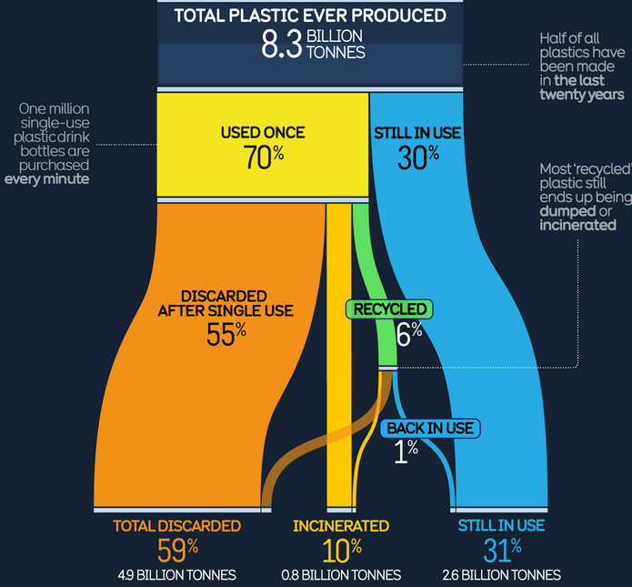
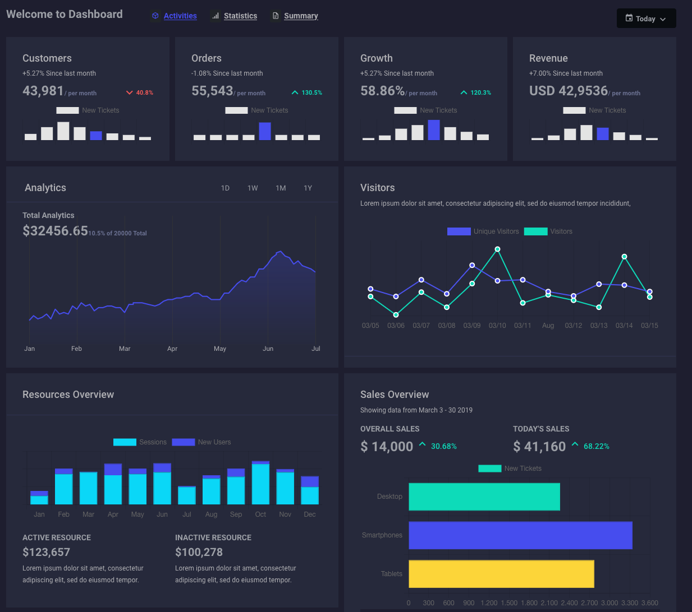
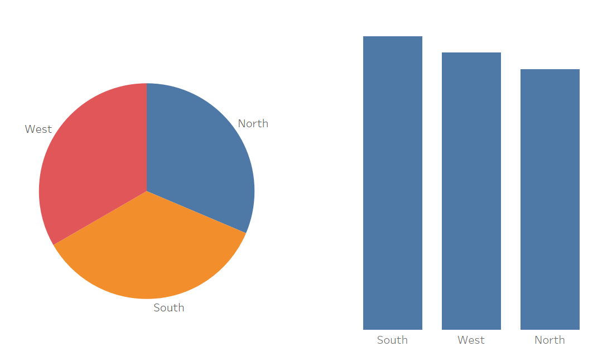
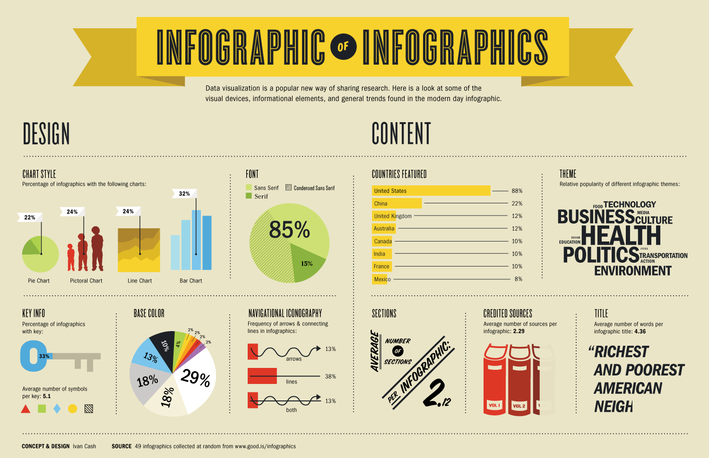
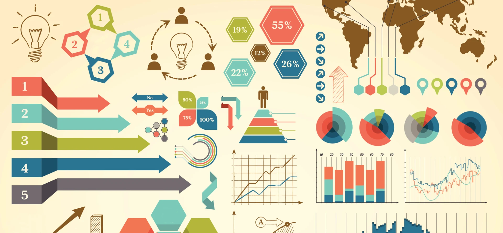

Creative Programming:
Data Visualisation
Lecture 9
(Re)visiting slides?
You can jump to any slide with the menu to the (bottom) left.
Did you miss a slide or want to revisit? Open the narration tab while studying to get an explanation of difficult slides.

Course stuff
- Exercise 4 hand-in was missing; deadline extended by 1 week
- We will be extra careful with the breaks today
- Schedule of milestone 2 will be announced soon by Thomas
Today’s code
- Today we will be going over a lot more advanced code
- Don’t worry if you don’t understand every line!
- Focus on the overall patterns and techniques
- Hopefully some of these examples will inspire you/help you with your project
Visualising Data
Recap: Data Sources
- Last week we learned how to load data into our sketches
- CSV for tabular data
- JSON for nested structures
- APIs for live data
- This week: how to show that data visually
Why visualise?
- Numbers alone are hard to interpret
- Visualisation reveals patterns, trends, and outliers
- It makes data accessible and engaging
- In creative programming, the visual IS the output
Visualisation in the real world


The core idea
- Data visualisation = mapping values to visual properties
map()is the key function for this- One data value can drive one or more visual properties:
- Position: x, y
- Size: width, height, diameter
- Colour: r, g, b, alpha
- Angle: rotation, arc size
The building blocks
- Every chart is built from things we already know
- Shapes:
rect(),circle(),line(),image() - Position: x, y coordinates
- Colour:
fill(),stroke() - Text:
text(), labels, titles
- Shapes:
- The difference: these properties are driven by data
Bar charts
- Each bar represents a category, the height represents a value
- Loop through an array and draw a
rect()per value - Labels and values are drawn with
text()
Key formula: positioning bars
- Calculate each bar’s x position:
- Draw from the bottom up:
Adding colour as a second dimension
- Use
map()to convert values into colours - Higher values = warmer colours, lower values = cooler colours
Key concept: flipping y
- In p5.js, y = 0 is the top of the canvas
- In charts, higher values should be higher on screen
map()handles this by reversing the output range:
Line charts
- Shows how values change over a sequence (often time)
- Draw
line()segments between consecutive data points map()converts values to screen positions
Chart design tips
- Always label your axes and add a title
- Use colour purposefully, not decoratively
- Start bar charts at zero to avoid misleading proportions
- Keep it simple: one chart, one message
- Use
textAlign()to position labels cleanly
Chart builders
Class Assignment: Build a Chart
- Pick either a bar chart or line chart and copy the code from the earlier slides.
- Find or generate at least 6 data points with labels. You can make up your own data!
- Draw the chart with proper axes, labels, and a title
- Add colour mapping to encode an extra dimension (e.g. warm/cool colours for high/low values)
More Charts and Techniques
Hover detection for charts
- For chart interactivity, hover detection is really neat!
- It can be useful for long conditions to store them in a variable for readability
- The
dist()function calculates the distance between two points
Scatter plots
- Shows the relationship between two variables
- Each point has an x and a y value mapped to canvas positions
- Great for seeing correlations and clusters
Pie charts
- Shows parts of a whole as slices of a circle
- Use
arc()with PIE mode to draw each slice - Angles accumulate so slices connect seamlessly
Key formula: values to angles
- Remember to set
angleMode(DEGREES)insetup()!
- The full circle is 360 degrees
- Each slice gets a fraction of the circle
A word of caution on pie charts
- Pie charts look nice, but they are hard to read with many slices
- Human eyes are bad at comparing angles and areas
- Works well for two categories (e.g. 60% vs. 40%)
- For 3+ categories, a bar chart is almost always clearer

Multiple mappings
- One data point can drive multiple visual channels
- Example: position, size, AND colour from the same dataset
- Be careful not to overdo it
Using CSV data from last week
- Combine
loadTable()from last week with bar chart drawing - Loop through rows and map column values to bars
Animating charts with lerp
- We have used an easing formula before, but you can also use
lerp() - Use either to smoothly transition bar heights from zero
Adding data on the fly
- We can add to our data arrays during runtime
- Click to add random data, press ‘r’ to reset
Finding data
- Good visualisations start with interesting data
- Some great open data sources:
- Danmarks Statistik — population, economy, education, health
- Open Data DK — Danish municipal open data
- DMI Open Data — Danish weather and climate
- SimpleMaps Denmark — city coordinates and populations
- Our World in Data — global datasets, easy CSV downloads
- You only need 5-15 data points — keep it small!
Find your data
Class Assignment: Find Your Data
- Browse the data sources from last slide (or find your own) and pick something interesting
- Download or copy the data — aim for 5-15 data points with at least 2 columns
- Load the data into p5.js (array, CSV, or JSON) and create one chart that shows something interesting
- Pick a chart type that fits: bar for comparisons, line for trends, scatter for relationships, or a pie
We will continue with this dataset in the next assignment!
Infographics
What is an infographic?
- A visual summary that combines multiple elements into one layout
- Charts + icons + key numbers + text + colour
- Tells a complete story at a glance
- Common in journalism, reports, social media, and public health

Pictogram charts
- Replace bars with repeated icons to represent quantities
- Each icon = a fixed number of units
- More engaging and intuitive than abstract bars
Progress and gauges
- Show progress toward a goal (current vs. target)
- Circular gauges use
arc(), progress bars userect() - Great for dashboards and tracker-style layouts
Key formula: circular gauge
- Same idea as pie charts — remember
angleMode(DEGREES)!
-90starts the arc at the top (12 o’clock)
Composing an infographic
- Divide the canvas into regions (header, stats, charts)
- Draw each component in its own region
- Use consistent colours and typography throughout
Example: Danish cities from CSV
- Uses
loadTable()to load the same CSV from lecture 8 - Stat boxes summarise averages across cities
- Bar chart compares temperatures, dot sizes show humidity
Example: live weather dashboard
- Fetches live weather for Copenhagen, Aarhus, Odense, and Aalborg
- Uses the Open-Meteo API from last lecture
- Combines stat cards, line chart, and bar chart in one dashboard
Infographic design tips
- Hierarchy: biggest/boldest element = most important message
- Consistency: pick 3-4 colours and stick with them
- White space: don’t fill every pixel — let the layout breathe
- Flow: guide the eye from top to bottom, left to right
- Source: always credit your data source
Data poster
Class Assignment: Data Poster
Using the dataset from the previous assignment:
- Sketch a layout on paper: where will the title, key numbers, and charts go?
- Build an infographic in p5.js that combines at least two different visual elements (e.g. chart + stat boxes, pictogram + progress bars)
- Add a title, source credit, and consistent colour scheme
- Add animation or interaction to make it feel alive

Summary
- Data visualisation = mapping values to visual properties with
map() - Bar charts:
rect()with height from data - Line charts:
line()segments between consecutive data points - Scatter plots:
circle()with x and y from two variables - Pie charts:
arc()with angles from data proportions - Infographics combine multiple elements into one cohesive layout

Creative Programming 2026 Lecture 9 - Ties Robroek - IT University of Copenhagen